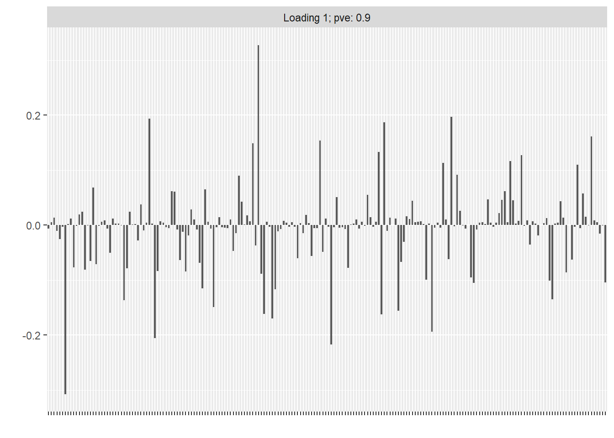
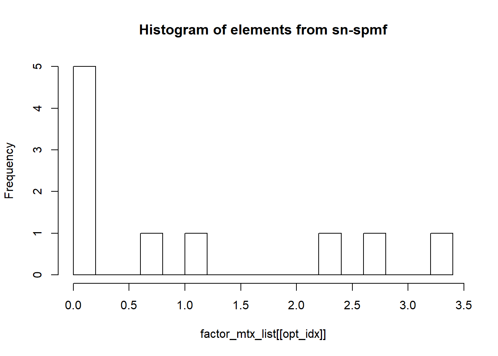
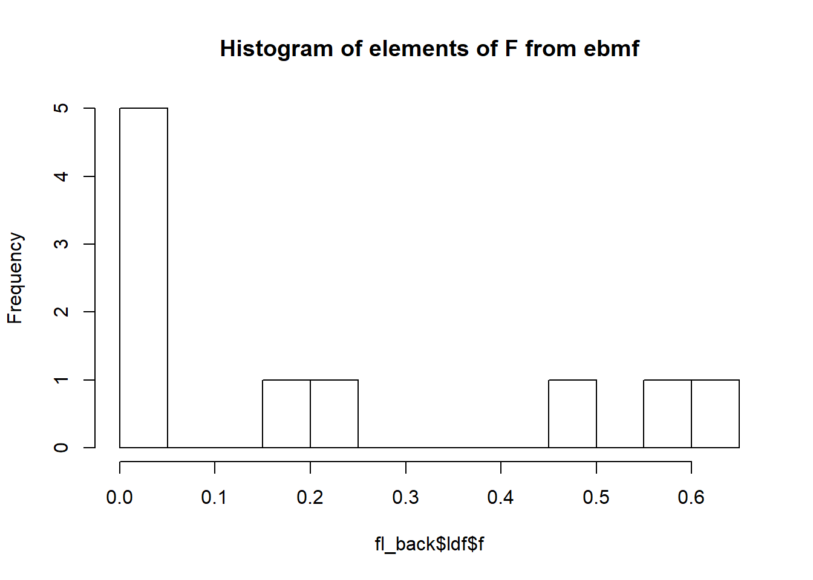
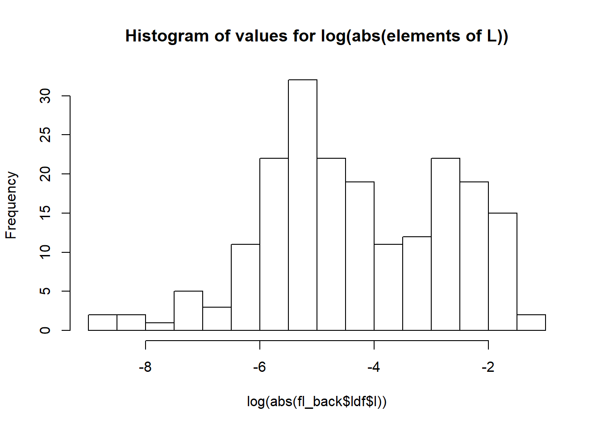
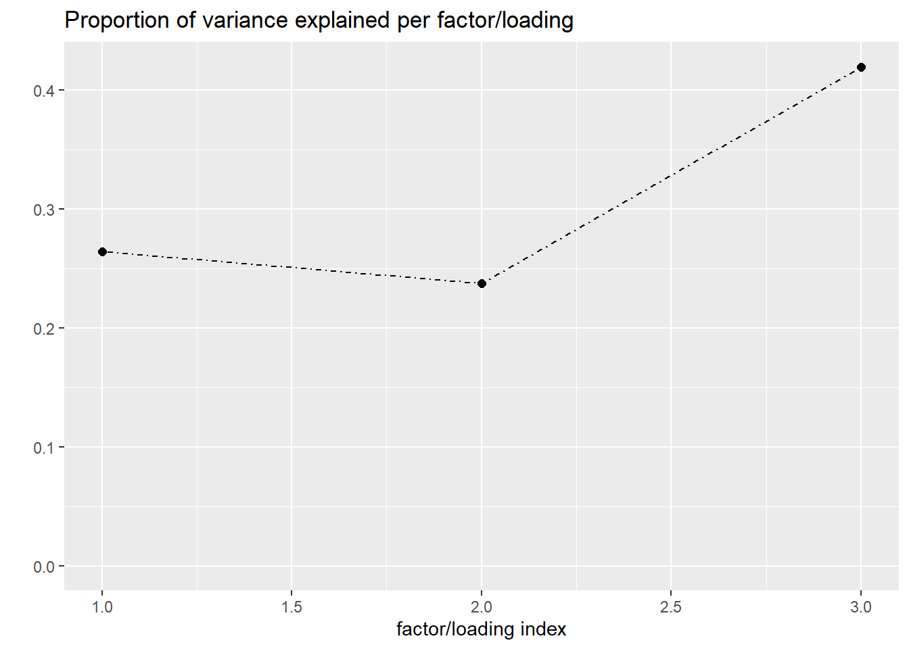
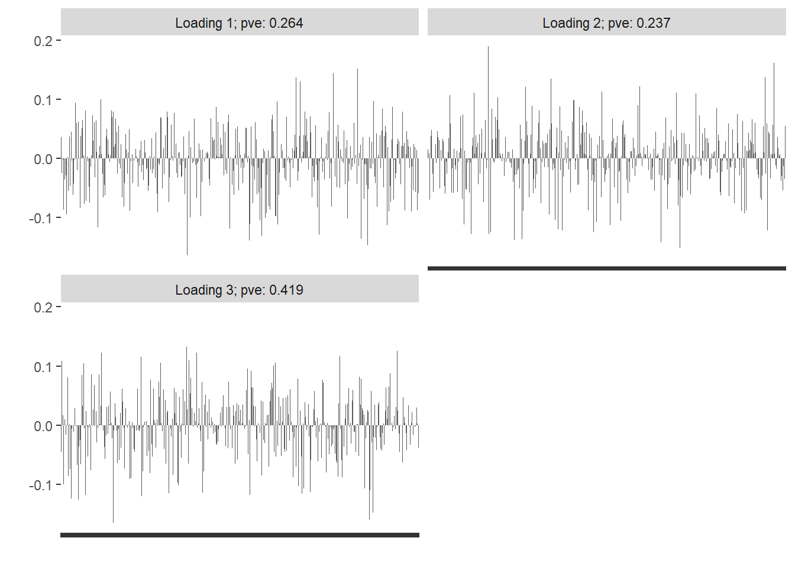
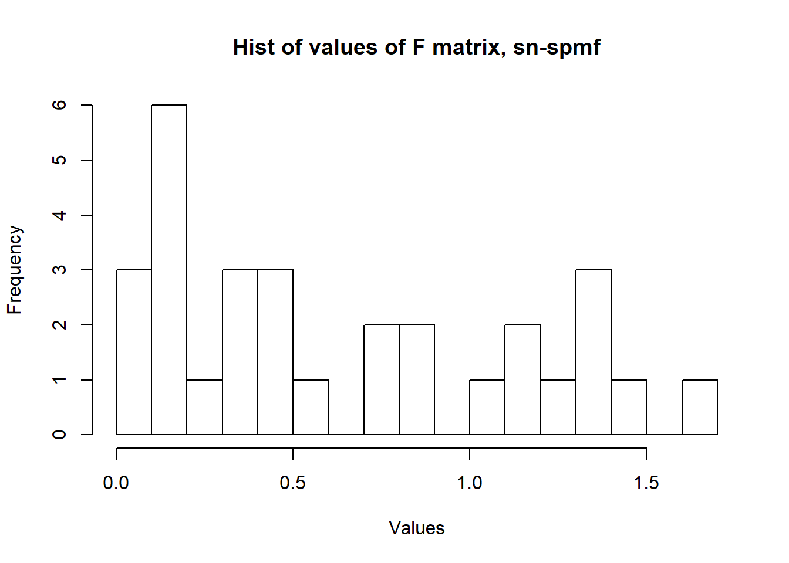
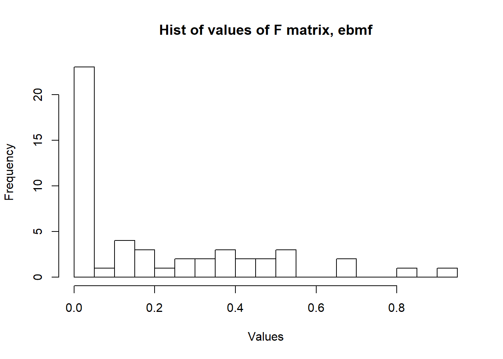

Last updated: 2020-02-17
Checks: 7 0
Knit directory: Code/
This reproducible R Markdown analysis was created with workflowr (version 1.4.0). The Checks tab describes the reproducibility checks that were applied when the results were created. The Past versions tab lists the development history.
Great! Since the R Markdown file has been committed to the Git repository, you know the exact version of the code that produced these results.
Great job! The global environment was empty. Objects defined in the global environment can affect the analysis in your R Markdown file in unknown ways. For reproduciblity it’s best to always run the code in an empty environment.
The command set.seed(20191013) was run prior to running the code in the R Markdown file. Setting a seed ensures that any results that rely on randomness, e.g. subsampling or permutations, are reproducible.
Great job! Recording the operating system, R version, and package versions is critical for reproducibility.
Nice! There were no cached chunks for this analysis, so you can be confident that you successfully produced the results during this run.
Great job! Using relative paths to the files within your workflowr project makes it easier to run your code on other machines.
Great! You are using Git for version control. Tracking code development and connecting the code version to the results is critical for reproducibility. The version displayed above was the version of the Git repository at the time these results were generated.
Note that you need to be careful to ensure that all relevant files for the analysis have been committed to Git prior to generating the results (you can use wflow_publish or wflow_git_commit). workflowr only checks the R Markdown file, but you know if there are other scripts or data files that it depends on. Below is the status of the Git repository when the results were generated:
Ignored files:
Ignored: .Rhistory
Ignored: analysis/.Rhistory
Ignored: code/sn_spMF/.Rhistory
Untracked files:
Untracked: data/W_sim.txt
Untracked: data/X_sim.txt
Note that any generated files, e.g. HTML, png, CSS, etc., are not included in this status report because it is ok for generated content to have uncommitted changes.
These are the previous versions of the R Markdown and HTML files. If you’ve configured a remote Git repository (see ?wflow_git_remote), click on the hyperlinks in the table below to view them.
| File | Version | Author | Date | Message |
|---|---|---|---|---|
| Rmd | 9892c8f | Adam Sun | 2020-02-17 | Build site. |
| Rmd | 0155c86 | Adam Sun | 2020-02-17 | First sim results, 1fac and 5facs matrices |
| html | ab998e5 | Adam Sun | 2020-02-17 | Build site. |
| Rmd | 1d506b9 | Adam Sun | 2020-02-17 | Initial analysis with 1 fac + 5 fac matrices |
| Rmd | 8fbd200 | Adam Sun | 2020-02-17 | Initial publish for 1 fac, 5 facs matrix factorization |
| Rmd | 5b56f69 | Adam Sun | 2020-02-17 | initial analysis with 1 factor, 5 factor matrices |
| Rmd | 0ccbff4 | Adam Sun | 2020-02-17 | Files needed for running sn-spmf |
| html | 0ccbff4 | Adam Sun | 2020-02-17 | Files needed for running sn-spmf |
| html | 590c4f1 | Adam Sun | 2019-11-04 | Build site. |
| Rmd | 47a5189 | Adam Sun | 2019-11-04 | flashr 1-D, non-negative factor |
| html | 4d5fa70 | Adam Sun | 2019-10-13 | Build site. |
| Rmd | 1ab856d | Adam Sun | 2019-10-13 | First analysis |
Yuan He’s matrix factorization algorithm (sn-spMF) solves for non-negative F because “penalized”, the function used for iteratively solving for L and F, includes parameter to constrain coefficients to non-negative values. See fit_F.R, “penalized(…positive=T)”.
K, the number of factors, is selected outside the matrix factorization algorithm. Paper references producing a consensus matrix C “…after 30 runs with random initialization” and selecting K based off on which K maximizes the cophenetic correlation (uses compute_cophenet.R).
Sparsity coefficients on loadings matrix (L) and factors matrix (F)–denoted alpha and lambda in paper–are selected after K is selected.
NOTE – not sure how to make website reference not hard-coded.
Warning: package 'penalized' was built under R version 3.5.3Loading required package: survivalWelcome to penalized. For extended examples, see vignette("penalized").Warning: package 'optparse' was built under R version 3.5.3-- Attaching packages ------------------------------------------------------------------ tidyverse 1.2.1 --v ggplot2 3.2.1 v purrr 0.3.2
v tibble 2.1.3 v dplyr 0.8.0.1
v tidyr 0.8.1 v stringr 1.4.0
v readr 1.1.1 v forcats 0.3.0 Warning: package 'ggplot2' was built under R version 3.5.3Warning: package 'tibble' was built under R version 3.5.3Warning: package 'purrr' was built under R version 3.5.3Warning: package 'dplyr' was built under R version 3.5.3Warning: package 'stringr' was built under R version 3.5.3-- Conflicts --------------------------------------------------------------------- tidyverse_conflicts() --
x dplyr::filter() masks stats::filter()
x dplyr::lag() masks stats::lag()Warning: package 'devtools' was built under R version 3.5.3Loading required package: usethisWarning: package 'usethis' was built under R version 3.5.3Warning: package 'NNLM' was built under R version 3.5.3inputdir = "https://raw.githubusercontent.com/acloudysun12/Matrix_Facs/master/code/sn_spMF/"
source(paste0(inputdir, "compute_obj.R"))
source(paste0(inputdir, "fit_L.R"))
source(paste0(inputdir, "fit_F.R"))
source(paste0(inputdir, "readIn.R"))
source(paste0(inputdir, "Update_FL_AS.R"))
source(paste0(inputdir, "compute_cophenet.R"))-------------------------------------------------------------------------You have loaded plyr after dplyr - this is likely to cause problems.
If you need functions from both plyr and dplyr, please load plyr first, then dplyr:
library(plyr); library(dplyr)-------------------------------------------------------------------------
Attaching package: 'plyr'The following objects are masked from 'package:dplyr':
arrange, count, desc, failwith, id, mutate, rename, summarise,
summarizeThe following object is masked from 'package:purrr':
compactrun_nnf =
function(X_mtx, W_mtx, num_facs,
max_iters = 100,
penalty_L = 0.1,
penalty_F = 0.1,
option_disp = T){
# Define hyperparams for test
K = num_facs
alpha1 = penalty_L
lambda1 = penalty_F
xfn=X_mtx %>% as.data.frame()
wfn=W_mtx %>% as.data.frame()
Data = readIn(K, alpha1, lambda1, xfn, wfn)
X = Data[['X']];
W = Data[['W']];
option = Data[['option']];
option[['iter']] = max_iters;
option[['disp']] = option_disp
Fn_basename = Data[['Fn_basename']];
## run MF to learn the factors
# print(paste0('Initial K=', (K), '; alpha1=', round(alpha1, 3),'; lambda1=', round(lambda1, 3)));
Run_iter = Update_FL(X, W, option);
FactorM = Run_iter[[1]]
LoadingM = Run_iter[[2]]
factor_corr = norm(cor(FactorM), 'F')
L_sparsity = Run_iter[[3]]
F_sparsity = Run_iter[[4]]
print(paste0('Final sparsity in Factor matrix =', (F_sparsity),'; Final sparsity in L =', (L_sparsity), '; '))
return(list(FactorM = FactorM, LoadingM = LoadingM))
}
Understand conceptually. Simulate 200x10 matrix. 50% sparse on factors (F) and 50% sparse on loadings (L). We set F to be non-negative with exp(1/2) distribution. Set to exp(1/2) so that signal is stronger than noise (SD of Error matrix = 1/2). L has N(0,1) distribution.
Use RRMSE for measurement (as per Wang Stephens paper) for comparison of methods.
set.seed(10000)
F_sparse = 0.50 # the true percentage of 0's
L_sparse = 0.50 # the true percentage of 0's
i = 1
# matrix prep
N = 200
P = 10
sd_noise = 0.5
sparseF_sim = 1 - rbinom(P, 1, prob = F_sparse[i])
F_sim = ifelse(sparseF_sim == 0, 0, rexp(P, rate = 1/2)) %>% matrix(nrow = P)
sparseL_sim = 1 - rbinom(N, 1, prob = L_sparse[i])
L_sim = ifelse(sparseL_sim == 0, 0, rnorm(N, 0, 1)) %>% matrix() # (nx1)
E_sim = rnorm(n = N*P, 0, sd_noise) %>% matrix(nrow = N)
X_sim = L_sim%*%t(F_sim) + E_sim
X_true = L_sim%*%t(F_sim)
F_sparse_true = sum(F_sim ==0)/length(F_sim)
paste0("F true sparsity: ", F_sparse_true)[1] "F true sparsity: 0.4"L_sparse_true = sum(L_sim ==0)/length(L_sim)
paste0("L true sparsity: ", L_sparse_true)[1] "L true sparsity: 0.535"Edited nnf code so it’s compatible with 1 factor.
Ideally, we would choose a vector of factors K and sparsity parameter values for L and F. However, the method of cophenetic correlation calculation (used in sn-spmf for finding the optimal number of factors K does not apply when K = 1). So for this simulation, we suppose that K = 1 is known. However, we run with initial K = 1 and 2 to see if sn-spmf redcues K to 1, We also vary sparsity parameters for L and F. We compute RRMSE from all runs to compare against EBMF method.
Note: sparsity parameter on Loadings (alpha1) could cause all elements shrunk to zero. Set max to 1.
[1] "K = 1 , F Penalty = 0.067"
[1] "Converged at itertaion 2"
[1] "Total time used for updating"
Time difference of 3.491747 secs
[1] "Final sparsity in Factor matrix =0; Final sparsity in L =0.05; "
[1] "K = 1 , F Penalty = 0.2735"
[1] "Converged at itertaion 2"
[1] "Total time used for updating"
Time difference of 3.168571 secs
[1] "Final sparsity in Factor matrix =0; Final sparsity in L =0.1; "
[1] "K = 1 , F Penalty = 0.1793"
[1] "Converged at itertaion 2"
[1] "Total time used for updating"
Time difference of 3.713286 secs
[1] "Final sparsity in Factor matrix =0; Final sparsity in L =0.095; "
[1] "K = 1 , F Penalty = 0.0062"
[1] "Converged at itertaion 2"
[1] "Total time used for updating"
Time difference of 4.379638 secs
[1] "Final sparsity in Factor matrix =0; Final sparsity in L =0.05; "
[1] "K = 1 , F Penalty = 0.3835"
[1] "Converged at itertaion 2"
[1] "Total time used for updating"
Time difference of 3.394374 secs
[1] "Final sparsity in Factor matrix =0; Final sparsity in L =0.05; "
[1] "K = 1 , F Penalty = 0.8655"
[1] "Converged at itertaion 2"
[1] "Total time used for updating"
Time difference of 3.49209 secs
[1] "Final sparsity in Factor matrix =0; Final sparsity in L =0.08; "
[1] "K = 1 , F Penalty = 0.6999"
[1] "Converged at itertaion 2"
[1] "Total time used for updating"
Time difference of 3.244857 secs
[1] "Final sparsity in Factor matrix =0; Final sparsity in L =0.06; "
[1] "K = 1 , F Penalty = 1.6011"
[1] "Converged at itertaion 2"
[1] "Total time used for updating"
Time difference of 3.297573 secs
[1] "Final sparsity in Factor matrix =0.1; Final sparsity in L =0.06; "
[1] "K = 1 , F Penalty = 0.9802"
[1] "Converged at itertaion 2"
[1] "Total time used for updating"
Time difference of 3.319346 secs
[1] "Final sparsity in Factor matrix =0; Final sparsity in L =0.12; "
[1] "K = 1 , F Penalty = 1.5402"
[1] "Converged at itertaion 2"
[1] "Total time used for updating"
Time difference of 3.378473 secs
[1] "Final sparsity in Factor matrix =0.1; Final sparsity in L =0.025; "
[1] "K = 1 , F Penalty = 2.8994"
[1] "Converged at itertaion 2"
[1] "Total time used for updating"
Time difference of 3.322274 secs
[1] "Final sparsity in Factor matrix =0.2; Final sparsity in L =0; "
[1] "K = 1 , F Penalty = 2.9647"
[1] "Converged at itertaion 2"
[1] "Total time used for updating"
Time difference of 3.254742 secs
[1] "Final sparsity in Factor matrix =0.2; Final sparsity in L =0.055; "
[1] "K = 1 , F Penalty = 4.7969"
[1] "Converged at itertaion 2"
[1] "Total time used for updating"
Time difference of 3.260832 secs
[1] "Final sparsity in Factor matrix =0.2; Final sparsity in L =0.02; "
[1] "K = 1 , F Penalty = 4.1581"
[1] "Converged at itertaion 2"
[1] "Total time used for updating"
Time difference of 3.256818 secs
[1] "Final sparsity in Factor matrix =0.2; Final sparsity in L =0.06; "
[1] "K = 1 , F Penalty = 4.834"
[1] "Converged at itertaion 2"
[1] "Total time used for updating"
Time difference of 3.201594 secs
[1] "Final sparsity in Factor matrix =0.2; Final sparsity in L =0.05; "
[1] "K = 2 , F Penalty = 0.4195"
[1] "Converged at itertaion 6"
[1] "Total time used for updating"
Time difference of 9.047909 secs
[1] "Final sparsity in Factor matrix =0.3; Final sparsity in L =0.1125; "
[1] "K = 2 , F Penalty = 0.2668"
[1] "Converged at itertaion 5"
[1] "Total time used for updating"
Time difference of 7.771375 secs
[1] "Final sparsity in Factor matrix =0.2; Final sparsity in L =0.0425; "
[1] "K = 2 , F Penalty = 0.0938"
[1] "Reached maximum iteration."
[1] "Total time used for updating"
Time difference of 1.084566 mins
[1] "Final sparsity in Factor matrix =0.45; Final sparsity in L =0.07; "
[1] "K = 2 , F Penalty = 0.2086"
[1] "Reached maximum iteration."
[1] "Total time used for updating"
Time difference of 1.077364 mins
[1] "Final sparsity in Factor matrix =0.4; Final sparsity in L =0.0475; "
[1] "K = 2 , F Penalty = 0.1579"
[1] "Converged at itertaion 22"
[1] "Total time used for updating"
Time difference of 29.08072 secs
[1] "Final sparsity in Factor matrix =0.4; Final sparsity in L =0.0475; "
[1] "K = 2 , F Penalty = 0.6271"
[1] "Converged at itertaion 26"
[1] "Total time used for updating"
Time difference of 33.793 secs
[1] "Final sparsity in Factor matrix =0.45; Final sparsity in L =0.1125; "
[1] "K = 2 , F Penalty = 1.6884"
[1] "Converged at itertaion 7"
[1] "Total time used for updating"
Time difference of 10.08334 secs
[1] "Final sparsity in Factor matrix =0.35; Final sparsity in L =0.055; "
[1] "K = 2 , F Penalty = 0.8019"
[1] "Converged at itertaion 29"
[1] "Total time used for updating"
Time difference of 38.03485 secs
[1] "Final sparsity in Factor matrix =0.45; Final sparsity in L =0.0675; "
[1] "K = 2 , F Penalty = 0.9453"
[1] "Converged at itertaion 21"
[1] "Total time used for updating"
Time difference of 26.73593 secs
[1] "Final sparsity in Factor matrix =0.45; Final sparsity in L =0.13; "
[1] "K = 2 , F Penalty = 1.3803"
[1] "Converged at itertaion 19"
[1] "Total time used for updating"
Time difference of 24.52623 secs
[1] "Final sparsity in Factor matrix =0.5; Final sparsity in L =0.1475; "
[1] "K = 2 , F Penalty = 4.7249"
[1] "Converged at itertaion 3"
[1] "Total time used for updating"
Time difference of 4.395304 secs
[1] "Final sparsity in Factor matrix =0.2; Final sparsity in L =0.13; "
[1] "K = 2 , F Penalty = 3.7965"
[1] "Converged at itertaion 38"
[1] "Total time used for updating"
Time difference of 49.93339 secs
[1] "Final sparsity in Factor matrix =0.55; Final sparsity in L =0.0525; "
[1] "K = 2 , F Penalty = 2.6524"
[1] "Converged at itertaion 14"
[1] "Total time used for updating"
Time difference of 18.31466 secs
[1] "Final sparsity in Factor matrix =0.55; Final sparsity in L =0.1875; "
[1] "K = 2 , F Penalty = 2.8155"
[1] "Converged at itertaion 14"
[1] "Total time used for updating"
Time difference of 19.39279 secs
[1] "Final sparsity in Factor matrix =0.5; Final sparsity in L =0.1275; "
[1] "K = 2 , F Penalty = 4.1009"
[1] "Converged at itertaion 7"
[1] "Total time used for updating"
Time difference of 10.68712 secs
[1] "Final sparsity in Factor matrix =0.45; Final sparsity in L =0.045; "Next, perform matrix factorization with EBMF. We use non-negative mf proposed by JW. We change the “ebnm_param” object so that F is non-negative but L can be any number. We do this by assigning “uniform+” prior on F, and a default normal prior with mean 0 and 1 SD to L.
Reference: https://willwerscheid.github.io/FLASHvestigations/nonnegative.html
We first use the normal flash function to confirm that L takes any values and F takes non-negative values. Next, we run flash_backfit over a range of starting K’s from 1 to 5 and choose the final run as the one which maximizes the objective.
# flash object of simulated X matrix
X_flash = flash_set_data(X_sim)
ebnm_param_l = list(g=ashr::normalmix(1,0,1), fixg=TRUE)
ebnm_fn = "ebnm_ash"
ebnm_param = list(
l = ebnm_param_l, # L can be any number
f = list(mixcompdist = "+uniform"), # Factors are non-negative
warmstart = TRUE)
# non-negative
udv_nn = function(Y, K = 1) {
tmp = NNLM::nnmf(Y, K, verbose = FALSE)
return(list(d = rep(1, K), u = tmp$W, v = t(tmp$H)))
}
# function to run flash once (for any matrix X)
run_flash_once <- function(X_mtx, f_init) {
flash(X_mtx, f_init = f_init,
ebnm_fn = ebnm_fn, ebnm_param = ebnm_param,
var_type="constant", init_fn = udv_nn,
backfit = TRUE, verbose = FALSE)
}
fl_init <- flash_add_factors_from_data(X_flash, K = 5,
init_fn = udv_nn,
ebnm_param = ebnm_param,
backfit = FALSE)
fl_iter <- run_flash_once(X_sim, f_init = fl_init)
print(paste0("number of non-negative elements in l: ", length(which(fl_iter$ldf$l < 0)))) [1] "number of non-negative elements in l: 96"print(paste0("number of non-negative elements in f: ", length(which(fl_iter$ldf$f < 0)))) [1] "number of non-negative elements in f: 0"df_ebmf_results = matrix(0, nrow = 0, ncol = 5) %>% as.data.frame()
all_flash_f = list()
all_flash_l = list()
all_flash_d = list()
for (K_iter in 1:5){
fl_init <- flash_add_factors_from_data(X_flash, K = K_iter,
init_fn = udv_nn,
ebnm_param = ebnm_param,
backfit = FALSE)
time_eb = Sys.time()
fl_back <- flash_backfit(data = X_flash, f_init = fl_init,
ebnm_fn = ebnm_fn,
ebnm_param = ebnm_param,
var_type = "constant",
verbose = FALSE)
fl_back_l = fl_back$ldf$l
fl_back_d = diag(x = fl_back$ldf$d, nrow = length(fl_back$ldf$d))
fl_back_f = fl_back$ldf$f
X_hat_eb = fl_back_l %*% fl_back_d %*% t(fl_back_f)
RRMSE_eb = sqrt(sum((X_hat_eb - X_true)^2)/sum(X_true^2))
time_eb = difftime(Sys.time(), time_eb, units = "secs")
df_ebmf_results = rbind(df_ebmf_results,
c(K_iter, time_eb, fl_back$nfactors, fl_back$objective, RRMSE_eb))
all_flash_f[[K_iter]] = fl_back_f
all_flash_l[[K_iter]] = fl_back_l
all_flash_d[[K_iter]] = fl_back_d
}
colnames(df_ebmf_results) = c("K", "Time_Taken", "Num Factors", "Objective", "RRMSE")
plot(fl_back, plot_loadings = TRUE)Warning in plot.flash(fl_back, plot_loadings = TRUE): Not enough factors to
create a scree plot.
The average accuracy across all sp-snmf runs was 0.114, while ebmf produced the same RRMSE of 0.1 for all initial starting K’s. This is marginally higher than the average sp-snmf RRMSE by 0.014.
As mentioned before, sn-spmf chooses the best K by minimizing cophenetic correlation. However, this does not apply for K = 1, so we assume that K = 1 is known for sn-spmf and focus only on runs where final K = 1 to compare against ebmf. In this case, the average RRMSE of sn-spmf runs had an RRMSE of 0.094, and the highest accuracy (‘optimal’) run had the lowest RRMSE of 0.088.
All ebmf runs correctly identified that the true factor matrix had rank K = 1. Meanwhile, note that not all sn-spmf runs correctly identified that K = 1. When initialized with K = 2, 14 out of 15 runs did not correctly identify the true K to be 1. That, however, could be partially because the maximum iteration is set to 50. If we ran to convergence, we may perhaps see better accuracy results (at the expense of longer runs).
In terms of time, the ebmf runs outperformed sn-spmf at an individual run level. Each run of sn-spmf took an average time of 15.431 seconds. Meanwhile, ebmf runs took an average of 7.188 seconds. Additionally, when the number of factors is misspecified, sn-spmf took considerably longer (29.082 seconds when mis-specified versus 3.487 seconds when not). Meanwhile, for ebmf, for any initial K flash_backfit took relatively more similar amounts of time, ranging from 3 seconds to ~15 seconds (scales linearly with the initial number of K’s for flash_backfit, from 1 to 5).
Looking at final sparsities on L and F, the sparsities on L and F from sn-spmf – 0.13 and 0.2 – are not that close to the true values of 0.535 and 0.4. However, certain estimates may be noise, and observing the histogram of values of F below, we see that indeed any values smaller than 0.5 may potentially be treated as noise. Ignoring elements of F < 0.1 gives us a sparsity estimate on F of 0.5, which is more similar to the true sparsity on F of 0.4.
Under ebmf, the prior distributions on L and F did not include the mix of point estimate densities, so we go with the approach above to estimate sparsity. The histogram of values of F and the log-abs_values of L indicate we can use reasonable cutoff values of 0.1 and -4 to get estimated sparsities of 0.5 and 0.405 respectively, for F and L. If we trust this hacky method of estimating sparsity on L and F, this suggests flash_backfit and sn-spmf are similar to each other in estimating the sparsity on F. In addition, flash_backfit is fairly accurate in estimating the sparsity of L of 0.535.
Finally, since both sn-spmf and ebmf both produce optimal matrices on F with 1 factor (i.e. K = 1), we do a side-by-side comparison of the two F vectors below with the true factor F used to generate the matrix X. While the orders of magnitude are different, the indices of elements which are larger than other elements in their respective vectors tie out accordingly across the three F’s.

sn-spmf F flash_back F true F
f 3.210 5.169 4.336
f 2.286 3.726 3.089
f 2.768 4.504 3.726
f 0.031 0.052 0.000
f 1.096 1.805 1.497
f 0.197 0.355 0.306
f 0.007 0.041 0.000
f 0.000 0.034 0.000
f 0.000 0.036 0.000
f 0.775 1.294 1.020[1] "Converged at itertaion 2"
[1] "Total time used for updating"
Time difference of 3.207611 secs
[1] "Final sparsity in Factor matrix =0.3; Final sparsity in L =0.105; "As a thought experiment, I try to do better on sn-spmf by modeling the RRMSE as a quadratic function of the starting on L and F to find optimal solution for them . (Note I have to bound L above by 1 and F by 10, otherwise it seems the sparsity on L and F may get pushed initially to 1 and cause either matrices to be the 0 matrix). The optimal sparsity estimates on F and L is the vector \((\lambda_1, \alpha_1)\) = 10, 0.65. This is not surprising since the coefficient on the quadratic term F is negative.
This does not achieve a better accuracy than our best sn-spmf run, resulting in an RRMSE of 0.091. The final sparsities on F and L on this run are 0.3 and 0.105.
[1] "Final 'optimal' run results:" Run K_start K_final F_lambda1 L_alpha1 F_sparse_final L_sparse_final
31 9999 1 1 10 0.65 0.3 0.105
Time Error
31 3.213612 0.09058209[1] "Reg coefficients with quadratic terms:" Estimate Std. Error t value Pr(>|t|)
(Intercept) 0.134 0.016 8.268 0.000
I(F_lambda1^2) -0.001 0.002 -0.664 0.513
I(L_alpha1^2) 0.025 0.079 0.313 0.757
F_lambda1 0.002 0.010 0.197 0.845
L_alpha1 -0.060 0.069 -0.866 0.395
F_lambda1:L_alpha1 0.003 0.010 0.270 0.789
For conceptual understanding how both matrix factorizations perform for slightly more complicated matrices, we simulate a 400x10 matrix with the true number of latent factors as 5, with 25% sparse on F and 25% on L. Again, non-sparse factor values follow exp(1/2) distribution (so the signals are positive and also strong enough to be noise). Error matrix has SD = 1/2. L has N(0,1) distribution as above.
[1] "True (avg) sparsity on F: 0.34"[1] "True (avg) sparsity on L: 0.232"[1] "Dimension of X: 400x10"For this simulation, we choose a vector of factors K (3, 5, 7) and random initial sparsity parameter values for L and F. We run 8 random starts for each factor.
[1] "Reached maximum iteration."
[1] "Total time used for updating"
Time difference of 2.275801 mins
[1] "Final sparsity in Factor matrix =0.166666666666667; Final sparsity in L =0.03; "
[1] "Converged at itertaion 5"
[1] "Total time used for updating"
Time difference of 15.00412 secs
[1] "Final sparsity in Factor matrix =0.1; Final sparsity in L =0.0225; "
[1] "Converged at itertaion 3"
[1] "Total time used for updating"
Time difference of 9.658805 secs
[1] "Final sparsity in Factor matrix =0.1; Final sparsity in L =0.000833333333333333; "
[1] "Reached maximum iteration."
[1] "Total time used for updating"
Time difference of 2.031997 mins
[1] "Final sparsity in Factor matrix =0.0666666666666667; Final sparsity in L =0.0175; "
[1] "Converged at itertaion 3"
[1] "Total time used for updating"
Time difference of 12.40441 secs
[1] "Final sparsity in Factor matrix =0.0333333333333333; Final sparsity in L =0.0391666666666667; "
[1] "Converged at itertaion 5"
[1] "Total time used for updating"
Time difference of 14.59057 secs
[1] "Final sparsity in Factor matrix =0.1; Final sparsity in L =0.00166666666666667; "
[1] "Reached maximum iteration."
[1] "Total time used for updating"
Time difference of 2.026087 mins
[1] "Final sparsity in Factor matrix =0.1; Final sparsity in L =0.0266666666666667; "
[1] "Converged at itertaion 16"
[1] "Total time used for updating"
Time difference of 42.45616 secs
[1] "Final sparsity in Factor matrix =0.1; Final sparsity in L =0.0266666666666667; "
[1] "Reached maximum iteration."
[1] "Total time used for updating"
Time difference of 2.269371 mins
[1] "Final sparsity in Factor matrix =0.22; Final sparsity in L =0.038; "
[1] "Reached maximum iteration."
[1] "Total time used for updating"
Time difference of 2.291026 mins
[1] "Final sparsity in Factor matrix =0.24; Final sparsity in L =0.047; "
[1] "Converged at itertaion 5"
[1] "Total time used for updating"
Time difference of 18.55691 secs
[1] "Final sparsity in Factor matrix =0.06; Final sparsity in L =0.0035; "
[1] "Reached maximum iteration."
[1] "Total time used for updating"
Time difference of 2.293067 mins
[1] "Final sparsity in Factor matrix =0.24; Final sparsity in L =0.0245; "
[1] "Reached maximum iteration."
[1] "Total time used for updating"
Time difference of 2.286977 mins
[1] "Final sparsity in Factor matrix =0.28; Final sparsity in L =0.055; "
[1] "Reached maximum iteration."
[1] "Total time used for updating"
Time difference of 2.229889 mins
[1] "Final sparsity in Factor matrix =0.32; Final sparsity in L =0.0585; "
[1] "Converged at itertaion 9"
[1] "Total time used for updating"
Time difference of 32.2558 secs
[1] "Final sparsity in Factor matrix =0.08; Final sparsity in L =0.005; "
[1] "Reached maximum iteration."
[1] "Total time used for updating"
Time difference of 2.337966 mins
[1] "Final sparsity in Factor matrix =0.26; Final sparsity in L =0.0705; "
[1] "Reached maximum iteration."
[1] "Total time used for updating"
Time difference of 5.440764 mins
[1] "Final sparsity in Factor matrix =0.328571428571429; Final sparsity in L =0.0342857142857143; "
[1] "Reached maximum iteration."
[1] "Total time used for updating"
Time difference of 3.183744 mins
[1] "Final sparsity in Factor matrix =0.328571428571429; Final sparsity in L =0.0335714285714286; "
[1] "Converged at itertaion 11"
[1] "Total time used for updating"
Time difference of 55.24979 secs
[1] "Final sparsity in Factor matrix =0.0571428571428571; Final sparsity in L =0.0360714285714286; "
[1] "Reached maximum iteration."
[1] "Total time used for updating"
Time difference of 4.846975 mins
[1] "Final sparsity in Factor matrix =0.385714285714286; Final sparsity in L =0.105357142857143; "
[1] "Reached maximum iteration."
[1] "Total time used for updating"
Time difference of 3.201288 mins
[1] "Final sparsity in Factor matrix =0.442857142857143; Final sparsity in L =0.0457142857142857; "
[1] "Reached maximum iteration."
[1] "Total time used for updating"
Time difference of 6.172327 mins
[1] "Final sparsity in Factor matrix =0.314285714285714; Final sparsity in L =0.1725; "
[1] "Reached maximum iteration."
[1] "Total time used for updating"
Time difference of 4.235493 mins
[1] "Final sparsity in Factor matrix =0.357142857142857; Final sparsity in L =0.0310714285714286; "
[1] "Reached maximum iteration."
[1] "Total time used for updating"
Time difference of 4.322816 mins
[1] "Final sparsity in Factor matrix =0.371428571428571; Final sparsity in L =0.1025; "Next, we select optimal K based on which K maximizes the cophonet correlation of the “consensus”" matrix. Per Yuan He’s section “Model Selection”, this K shown empirically to produce the stable factor matrices. Next, we select optimal sparsity values for L and F based on lowest correlation between factors.
We use mean absolute pairwise correlation for selecting optimal sparsity parameters. I decided not to use Frobenius norm of correlation matrix because this would actually benefit small pairwise correlations and penalize larger pairwise correlations relative to using absolute correlation (because of the squaring?).
Next, perform matrix factorization with EBMF. Again, we use non-negative mf proposed by JW. Same setup as with 1-factor above.
This time, however, we use a combination of flash_add_greedy and flash_backfit (instead of just backfit) with starting K’s from 1 to 8. We then select the final run based on which run minimized our objective.
[1] "Example factor loadings output plots from one run"
The “optimal” sn-spmf run (which K gave the highest cophenetic correlation) found the final number of factors to be 3. The best ebmf run (which run maximized the objective) found the optimal number of factors to be 5.
This “optimal” run was chosen as per Yuan He’s documentation with regards to choosing K (number of factors) which maximizes the cophenetic correlation (and supposedly indicates a more stable factor matrix). The sparsity parameters were then selected to minimize pairwise correlation among factors (interpreted as mean absolute pairwise correlation).
If the sn-spmf found K = 5 instead to be optimal, then the best run would have an RRMSE of 0.095, with sparsity levels on F and L of 0.22 and 0.038.
Neither results would have been better than the best ebmf run (highest objective), which had an RRMSE of 0.094. This is still 0.001 lower than the optimal sn-spmf run based on 5 factors, and half as large as RRMSE of the “optimal” sn-spmf run based on 3 factors (definitely significant). Note: the best ebmf run also has the lowest RRMSE.
When measured by time, ebmf clearly outpaced sn-spmf and scales much better for larger matrices. Each run of sn-spmf took an average time of 136.957 seconds, more than 5 times as long despite setting the max number of iterations to be the same between the two simulations. Thus, sn-spmf does not seem to scale linearly. Also, to have enough data to use cophenetic correlation to select optimal K, each choice of initial K was paired with 8 random starts on initial sparsity parameters on L and F. So total time required was 54.783 minutes.
Meanwhile, flash_backfit took 2.265 minutes in total, which is much faster. Additionally, flash_backfit seems to scale more linearly with matrix size, taking approximately twice as long for 400x10 matrices as 200x10 matrices.
[1] "'Optimal' selected run results, sn-spmf" Run K_start K_final F_lambda1 L_alpha1 F_sparse_final L_sparse_final
3 3 3 3 3.399 0.02 0.1 0.0008333333
Time Error
3 9.659 0.217[1] ""[1] "Best sn-spmf run results based on true K = 5, sn-spmf" Run K_start K_final F_lambda1 L_alpha1 F_sparse_final L_sparse_final
9 1 5 5 0.638 0.556 0.22 0.038
Time Error
9 136.162 0.095[1] ""[1] "All flash_backfit runs" K_start Time_Taken Num_Factors Objective RRMSE
1 1 6.159 3 -8256.818 0.219
2 2 8.872 3 -8256.981 0.219
3 3 19.192 4 -7912.047 0.151
4 4 12.534 3 -8263.422 0.219
5 5 29.136 5 -7701.152 0.094
6 6 13.156 3 -8256.984 0.219
7 7 31.012 5 -7536.122 0.094
8 8 15.842 3 -8256.987 0.219
K_start Time_Taken Num_Factors Objective RRMSE
1 1 6.159 3 -8256.818 0.219
2 2 8.872 3 -8256.981 0.219
3 3 19.192 4 -7912.047 0.151
4 4 12.534 3 -8263.422 0.219
5 5 29.136 5 -7701.152 0.094
6 6 13.156 3 -8256.984 0.219
7 7 31.012 5 -7536.122 0.094
8 8 15.842 3 -8256.987 0.219[1] ""[1] "Time taken for flash_backfit" K_start Time_Taken Num_Factors Objective RRMSE
7 7 31.012 5 -7536.122 0.094
K_start Time_Taken Num_Factors Objective RRMSE
7 7 31.012 5 -7536.122 0.094In case the optimal number of factors selected by sn-spmf and ebmf do not match anymore, we can still compare the histograms of values of their respective Factor matrices. Histogram of F from ebmf shows better sparsity (initial spike in freqeuency of elements near 0). Histogram of F from sn-spmf doesn’t show this trend as strongly.

sessionInfo()R version 3.5.1 (2018-07-02)
Platform: x86_64-w64-mingw32/x64 (64-bit)
Running under: Windows 10 x64 (build 18362)
Matrix products: default
locale:
[1] LC_COLLATE=English_United States.1252
[2] LC_CTYPE=English_United States.1252
[3] LC_MONETARY=English_United States.1252
[4] LC_NUMERIC=C
[5] LC_TIME=English_United States.1252
attached base packages:
[1] stats graphics grDevices utils datasets methods base
other attached packages:
[1] plyr_1.8.4 NNLM_0.4.3 ebnm_0.1-24 devtools_2.2.1
[5] usethis_1.5.0 flashr_0.6-6 forcats_0.3.0 stringr_1.4.0
[9] dplyr_0.8.0.1 purrr_0.3.2 readr_1.1.1 tidyr_0.8.1
[13] tibble_2.1.3 ggplot2_3.2.1 tidyverse_1.2.1 optparse_1.6.4
[17] penalized_0.9-51 survival_2.42-3 knitr_1.20
loaded via a namespace (and not attached):
[1] httr_1.3.1 pkgload_1.0.2 jsonlite_1.5
[4] splines_3.5.1 foreach_1.4.7 modelr_0.1.2
[7] assertthat_0.2.1 mixsqp_0.2-2 cellranger_1.1.0
[10] remotes_2.1.0 yaml_2.2.0 sessioninfo_1.1.1
[13] pillar_1.4.2 backports_1.1.5 lattice_0.20-35
[16] glue_1.3.1 digest_0.6.21 rvest_0.3.2
[19] colorspace_1.4-1 htmltools_0.3.6 Matrix_1.2-14
[22] pkgconfig_2.0.3 broom_0.5.0 haven_1.1.2
[25] scales_1.0.0 processx_3.4.1 whisker_0.3-2
[28] getopt_1.20.3 git2r_0.25.2 ellipsis_0.3.0
[31] withr_2.1.2 ashr_2.2-39 lazyeval_0.2.2
[34] cli_1.1.0 magrittr_1.5 crayon_1.3.4
[37] readxl_1.1.0 ps_1.2.0 memoise_1.1.0
[40] evaluate_0.11 fs_1.2.6 doParallel_1.0.15
[43] nlme_3.1-137 MASS_7.3-50 xml2_1.2.0
[46] truncnorm_1.0-8 pkgbuild_1.0.3 prettyunits_1.0.2
[49] tools_3.5.1 hms_0.4.2 softImpute_1.4
[52] munsell_0.5.0 callr_3.3.2 compiler_3.5.1
[55] rlang_0.4.0 grid_3.5.1 iterators_1.0.12
[58] rstudioapi_0.8 labeling_0.3 rmarkdown_1.10
[61] testthat_2.2.1 gtable_0.3.0 codetools_0.2-15
[64] reshape2_1.4.3 R6_2.4.0 lubridate_1.7.4
[67] workflowr_1.4.0 rprojroot_1.3-2 desc_1.2.0
[70] stringi_1.4.3 pscl_1.5.2 parallel_3.5.1
[73] SQUAREM_2017.10-1 Rcpp_1.0.2 tidyselect_0.2.5